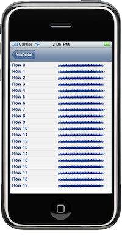

Please note: this article is part of the older "Objective-C era" on Cocoa with Love. I don't keep these articles up-to-date; please be wary of broken code or potentially out-of-date information. Read "A new era for Cocoa with Love" for more.
Load from NIB or construct views in code: which is faster?
You don't have to look far to find people suggesting that constructing views in code will increase the speed of your program. Since interface performance is a serious concern in iPhone development, I thought I'd look at the performance speed in creating complex iPhone UITableViewCells in code versus loading them from a NIB file.
Introduction
The sample program this time is pretty simple: an iPhone application that can load a table containing 20 rows (sized so that they will all fit onscreen), each row containing 20 fully-configured UILabels, a backgroundView and a selectedBackgroundView.
All timing is done on the construct/load only. Adding cells to the table, configuring the cell for its row and drawing to the screen (all of which is identical in either load from NIB or construct in code cases) is not included as part of the timing results.
The dark line across the right-hand side of each cell is just the word "placeholder" written 19 times on top of itself by the labels added to the cell.
You can download the sample project: NibOrNot.zip
Creating the cell in code
The construction of the cell in code looks like this:
cell = [[[UITableViewCell alloc]
initWithFrame:CGRectZero reuseIdentifier:CellIdentifier] autorelease];
cell.backgroundView = [[[UIView alloc] initWithFrame:CGRectZero] autorelease];
cell.backgroundView.backgroundColor = [UIColor colorWithWhite:0.95 alpha:1.0];
cell.selectedBackgroundView = [[[UIView alloc] initWithFrame:CGRectZero] autorelease];
cell.selectedBackgroundView.backgroundColor = [UIColor colorWithWhite:0.85 alpha:1.0];
UILabel *firstLabel =
[[[UILabel alloc] initWithFrame:CGRectMake(5, 0, 60, 20)] autorelease];
firstLabel.tag = 1;
firstLabel.font = [UIFont boldSystemFontOfSize:14];
firstLabel.shadowOffset = CGSizeMake(1,1);
firstLabel.textColor = [UIColor colorWithRed:0.0 green:0.2 blue:0.5 alpha:1.0];
firstLabel.backgroundColor = [UIColor clearColor];
firstLabel.text = @"placeholder";
firstLabel.autoresizingMask = UIViewAutoresizingFlexibleLeftMargin;
firstLabel.adjustsFontSizeToFitWidth = YES;
firstLabel.minimumFontSize = 10;
firstLabel.baselineAdjustment = UIBaselineAdjustmentAlignCenters;
firstLabel.lineBreakMode = UILineBreakModeTailTruncation;
firstLabel.baselineAdjustment = UIBaselineAdjustmentAlignCenters;
firstLabel.highlightedTextColor = [UIColor clearColor];
[cell addSubview:firstLabel];
//
// Plus the construction of a further 19 labels...
//In this case, the next 19 labels could all be created in a loop (since they're all identical) but I wanted to code to reflect a proper view where each subview is distinct and has many properties uniquely applied — so a basic loop is not necessarily appropriate.
Loading the NIB
There are many different ways to load a UITableViewCell (loading just the contentView, constructing a UITableViewCell subclass and having it load the NIB, etc). I've gone for the quick and easy approach: loading the UITableViewCell from the NIB in its entirety, passing my UITableViewController as the owner.
[[NSBundle mainBundle] loadNibNamed:@"Cell" owner:self options:nil];
cell = loadedCell;
loadedCell = nil;It may be hard to see how the loadNibNamed:owner:options: method is connected to the other two lines. In this code, loadedCell is an IBOutlet on self. When the NIB is loaded, it sets the loadedCell value to be equal to the loaded cell (this is configured in the NIB file). After loading, I copy the loadedCell into a local variable named cell (which is later configured and returned) and set the instance variable on the class back to nil (because we no longer need this pointer after returning it).
Simulator results
The first 10 results from the simulator look like this:
| Generated in code | Loaded from NIB |
| Generated cell in 0.00153798 seconds | Loaded cell in 0.00184 seconds |
| Generated cell in 0.00138998 seconds | Loaded cell in 0.00168097 seconds |
| Generated cell in 0.00138199 seconds | Loaded cell in 0.00168198 seconds |
| Generated cell in 0.00139898 seconds | Loaded cell in 0.001706 seconds |
| Generated cell in 0.00167602 seconds | Loaded cell in 0.001697 seconds |
| Generated cell in 0.00235301 seconds | Loaded cell in 0.00171804 seconds |
| Generated cell in 0.00137097 seconds | Loaded cell in 0.002105 seconds |
| Generated cell in 0.00138301 seconds | Loaded cell in 0.00173801 seconds |
| Generated cell in 0.00140399 seconds | Loaded cell in 0.00171405 seconds |
| Generated cell in 0.00137198 seconds | Loaded cell in 0.001692 seconds |
Constructing in code is generally about 20% faster — although at 1 millisecond per construction in the simulator, it doesn't really matter.
Device results
The first 10 results running on my iPhone 3G look like this:
| Generated in code | Loaded from NIB |
| Generated cell in 0.113011 seconds | Loaded cell in 0.131085 seconds |
| Generated cell in 0.114312 seconds | Loaded cell in 0.097244 seconds |
| Generated cell in 0.101614 seconds | Loaded cell in 0.08413 seconds |
| Generated cell in 0.105022 seconds | Loaded cell in 0.081331 seconds |
| Generated cell in 0.10087 seconds | Loaded cell in 0.093407 seconds |
| Generated cell in 0.105968 seconds | Loaded cell in 0.083472 seconds |
| Generated cell in 0.100045 seconds | Loaded cell in 0.091788 seconds |
| Generated cell in 0.105458 seconds | Loaded cell in 0.083763 seconds |
| Generated cell in 0.098836 seconds | Loaded cell in 0.08714 seconds |
| Generated cell in 0.102028 seconds | Loaded cell in 0.109811 seconds |
The construction in code is about 15% faster on the first construction but by the third cell, loading from the NIB file is 17% faster.
Running some CPU sampling in Instruments, I was able to work out that adjustsFontSizeToFitWidth was the critical factor here: it appears that Interface Builder precalculates the correct size based on the placeholder string, whereas the constructed code is forced to do this at runtime, causing its performance to suffer.
Turning off adjustsFontSizeToFitWidth in both the generated code and the loaded code (replaced the label.adjustsFontSizeToFitWidth = YES with label.adjustsFontSizeToFitWidth = NO and switched Cell.xib to Cell2.xib), gave the following results:
| Generated in code | Loaded from NIB |
| Generated cell in 0.085553 seconds | Loaded cell in 0.095012 seconds |
| Generated cell in 0.077257 seconds | Loaded cell in 0.087141 seconds |
| Generated cell in 0.084639 seconds | Loaded cell in 0.082693 seconds |
| Generated cell in 0.079142 seconds | Loaded cell in 0.098218 seconds |
| Generated cell in 0.078286 seconds | Loaded cell in 0.082136 seconds |
| Generated cell in 0.087895 seconds | Loaded cell in 0.087088 seconds |
| Generated cell in 0.0792 seconds | Loaded cell in 0.082335 seconds |
| Generated cell in 0.084037 seconds | Loaded cell in 0.082358 seconds |
| Generated cell in 0.076416 seconds | Loaded cell in 0.08714 seconds |
| Generated cell in 0.078426 seconds | Loaded cell in 0.084312 seconds |
This now swings the performance advantage back to handwritten code by 7%.
Conclusion
You can download the sample project: NibOrNot.zip
Don't assume that NIB files are always slower than generating views in code — it is not always true. While in general, generating user interface views in code appears to be 5-10% faster than loading from a NIB, the reality is that this difference is small enough that it doesn't matter and there are certainly some views that load faster from a NIB than from code.
This doesn't mean that construction speed is unimportant on the iPhone; it clearly is. I was able to create a (slightly contrived) view that took nearly two seconds to load (unacceptably slow). However, saving 10% by moving from NIBs to creating views in code will never fix the problem (1.8 seconds is still too slow). In this case, flattening the view hierarchy (using a single custom view to draw what multiple subviews used to draw), or removing text fields entirely, is the best way to improve performance. This type of redesign can improve performance by a factor of 10 or more.
The conclusion to be drawn is that when choosing to use a NIB file or not, you should use whatever you're most comfortable with and whatever will keep your code maintenance costs low. Don't be concerned that one approach or the other will cause your UI performance to suffer.
StreamToMe 2.0 is out (and Cocoa With Love is 2 years old).